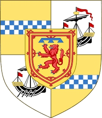

Antavla
3004433 Countess Elisabeth Stewart
Grevinna av Douglas. Blev högst 43 år.

Far:
Alexander Stewart (1214 - 1283)
Mor:
Jean Macrory of Bute (1218 - 1276)
Född:
1245 Irvine, Ayrshire, Scotland.
[1]
Död:
1288 Scotland.
[1]
Barn med
3004432 Sir William "The Hardy" Douglas of Douglas (>1243 - 1298)
Barn:
Jamea Douglas of Douglas (1286? - 1330)
Personhistoria
Årtal
Ålder
Händelse
1245
Födelse 1245 Irvine, Ayrshire, Scotland
[1]
1260?
Brodern
3004440 High Steward James Stewart
föds omkring 1260 Kilmarnock, Ayrshire, Scotland
[2]
1276
Modern
6008867 Countess Jean Macrory of Bute
dör 1276 Dundonald Castle, Ayrshire, Scotland
[1]
1283
Fadern
6008866 High Steward Alexander Stewart
dör 1283 Dundonald Castle, Ayrshire, Scotland
[3]
1286?
Sonen
1502216 Lord Jamea Douglas of Douglas
föds omkring 1286
[2]
1288
Död 1288 Scotland
[1]
Källor
[1]
natoab
[2]
Wikipedia
[3]
wikitree